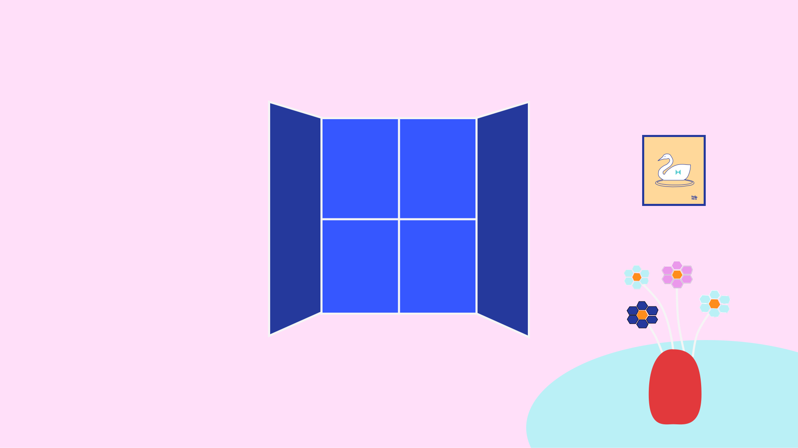

Creative & Colorful
想いを色鮮やかに、カタチにする。
Concept
自身のIllustratorスキルを活かし、SVGアニメーションを主役にしたブランドサイトを構築しました。JavaScriptのIntersection Observerを使用し、ユーザーの視線に合わせてコンテンツが展開する物語性を重視しました。
Detail
01 Material
素材へのこだわりを記述
02 Craftsmanship
技術力や工程のこだわり。窓の青に背景にはピンクを合わせてカラフルでありながら、落ち着きや信頼感を感じされるような色を採用しました。
Look Book

Collection 2026